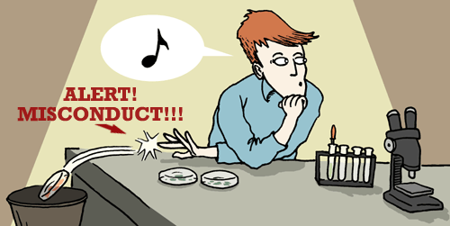

On the preceding page, we saw that scientific culture entails a set of norms and practices: scrutinize ideas, be honest, give credit where credit is due, and work within the ethical guidelines of the community. So what happens when someone within the community doesn't meet those expectations? In science, not playing by the rules amounts to scientific misconduct, or at least scientific misbehavior. Serious misconduct is rare, but nevertheless, since scientists are people and have human frailties, it does happen. Perhaps a chemist is asked to review the paper of a personal friend and chooses to overlook a flaw in the research — thus, failing to fairly scrutinize the work. Perhaps a physicist performs an experiment and chooses only to report results that fit with his or her favorite hypothesis — thus, failing to be fully honest. Perhaps a biologist writes a research article but doesn't cite a previous study that inspired the work — thus, failing to assign credit fairly. Or perhaps a psychologist studies a group of students' problem-solving skills but circumvents a few guidelines about how the participants should be recruited — thus, failing to work within the ethical guidelines established by the scientific community. Such behavior works against one of science's main goals — to build accurate knowledge about how the world works in ways that are ethical and humane.
Because it undermines science, scientists take misconduct very seriously. In response to misconduct, the scientific community may withhold esteem, job offers, and funding, effectively preventing the offender from participating in science. For example, a scientist found to have plagiarized parts of a grant application to the National Institutes of Health will likely be prevented from participating in federally funded grants for a period of time, a tough punishment for someone whose salary may be partly dependent on such grants. Some types of misconduct are even punishable by law. For example, because he faked data in funding applications and journal articles, medical researcher Eric Poehlman received a $180,000 fine, a year in prison, and a lifetime ban on receiving federal research funds!